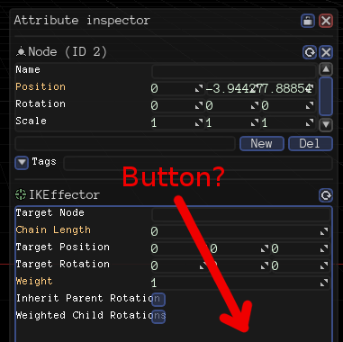
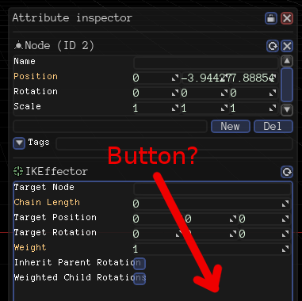

TheComet
Is it possible to have a button in the attribute inspector? I want to implement a way for the user to update the initial pose manually by the press of a button.


Is it possible to have a button in the attribute inspector? I want to implement a way for the user to update the initial pose manually by the press of a button.


I had an issue for it.